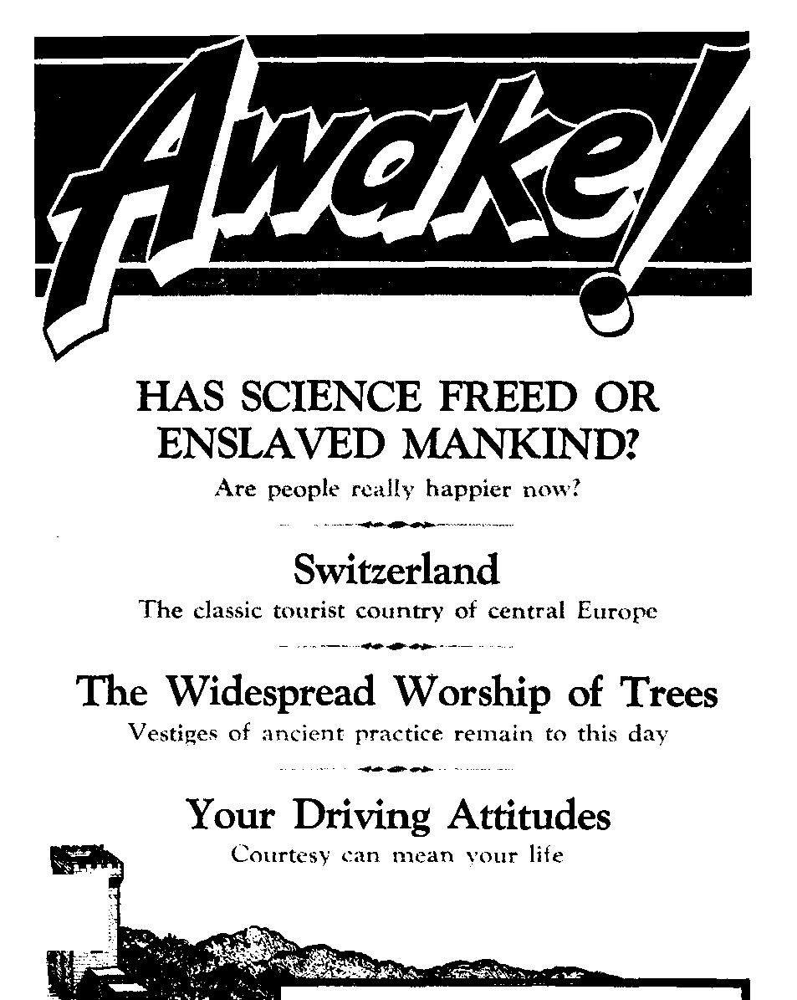
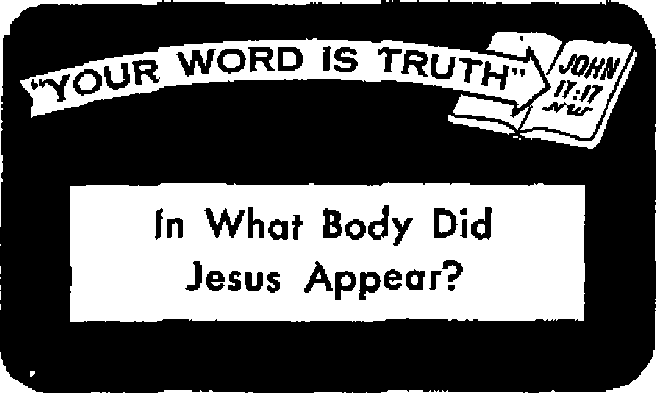
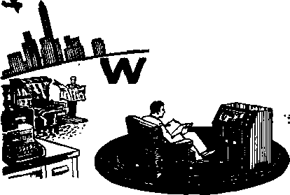

IWpn
THE MISSION OF THIS JOURNAL
New* source* that are able to keep you awake to tb» vital issues of our time* must b* unfettered by censorship and selfish Interests. "Awake!” has no fetter*. It recognize* facte, faces facts, is free to publish facts, ft Is not bound by poUtical ambitions or obligation#; if is unhampered by advertisers whose toe* muat not be trodden on; It Is unprejudiced by traditional creed*. Thi* journal keeps itself free that it may speak freely to you, But it does not abuse its freedom. It maintains integrity to truth.
"Awake 1” uses the regular news channels, but is not dependent on them. It* own correspondents are on ail continents, in scores of nation*. From the four corner* of the earth their uncensored, on-the-acenes reports come to you through these column*. This journal’s viewpoint is not narrow, but 1* international. It is read in many nations, in many languages, by person* of all age*. Through it* pages many fields of knowledge pass in review—government, commerce, religion, history, geography, science, social conditions, natural wonders—why, its coverage is as broad a* the earth and as high as the heaven*.
"Awake I" pledge* itself to righteous principles, to exposing hidden foes and subtle dangers, to championing freedom for all, to comforting mourners and strengthening those disheartened by the failures of a delinquent world, reflecting sure hope for the establishment of a righteous New World,
Get acquainted with "Awake!'' Keep awake by reading “Awake!”
PuBiittHip SKJdi wr-NTJiir By
WATCHTOW KR BIBLE A MB TRACT SO C LETT, iNC
ITT Str«i 1* N. Y * D. S. A.
N. H. Kitou, Prwidenf Geaht Scitie,
Prirtt/AB fwua; 1,325,000
Lmwkm in wlilkh thh warlM k aemiaauttljf—VriMtEr. fcidUh, Hrulslj, frenrh
Hbllairttah, Nor tin. Kptnvb. jHUMl'sn, MantHj - LtatW?. Pcrfunn'. L’br^Lr.lir
AN<k», •■$.. :K a^miw St., S'3r>|cin I. Pi * V-Awfeilli. 1. Ber^f»rJR4. fawthfc.d, W.S.W, Ff Gm«4l, 40 Irvin Aye. Ttronto 6. ImUrii Si EhMMM. 34 frvt* LotIchj. W - Ti (•nth AfIm, Frtnu Eu, r 0
Trtiiwj.il 7#
R«nrun«H sHuli b« Mrt tv •C5-* jw ra*»-IT to fwprance wftn 'eplMbna tv jvm-ih’.m ^<-\Tiry of E r*y ftewlUit?™ an* at
BtMkijL T:»ni c^tiiut sye rth ii '.oxtrd by tnrrr-MkttH ri u ic dl'ftrtci roviM'** are si urf fit ixaf (hrruKT M u^ritlvv fvjlhrtr*«*| -divii it Mnt j'. |r 1*1. Ivc MibacrlpliOT) ei
pi’fi. CHrH *f tMrat w«a tent 44 ** cffr* nky be etpvrtid mt air, can Reuth. ijccd your o1,i tn «•;; ar m* lAliw.
ihtnW u imcM RM^r it En*y>n. V, f r* Hjmi 3, }g7|, P*’»ttri Sr F. 5 A.
CONTENTS
Behind the Merger of the A.F.L.
Ilas Science Freed or Enslaved Mankind? 5
Jamaica Changes Its Goverrunent
Incredible Advances in Archaeology ■ 12
T?ie Widespread Worship of Trees
‘ Your Word Is Truth”
In What Body Did Jesus Appear?
Jehovah’s Witnesses Preach in
Behind the Merger of the A.F.L. and the C.I.O.
WHEN little Johnny punched big Billy in the nose, their friendship ended.
That blow erupted into a family feud that lasted for almost two decades. Now after twenty years both families see the need cf forgetting their differences and becoming mutual friends. Their truce became headline news. In effect, that is the story behind the split and the merger of the A.F.L. and the C.I.O.
In 1881 representatives of five national unions, representing some 45,000 members. met in Pittsburgh, Pennsylvania, to form the American Federation of Labor (A.F.L.). Their purpose in joining together was “for their mutual self-protection against unfair and abusive legislation which could not be solved at the bargaining ‘able but only in Congress.” Being rather loosely organized, the various craft unions would often be involved in bitter jurisdictional disputes.
Almost fifty years after the federation was formed, a growing number of labor leaders within the federation felt that the organization was too slow in organizing the industrial areas and that its method of organizing men according to trade or craft was not the best for that purpose. The jurisdictional question became a big issue. Two reports were presented to the labor convention. The majority report upheld craft jurisdictions-, the minority report that would have guaranteed industrial unions against raiding by craft unions was presented. A vote was taken. The minority report lost, 18,024 to 10,933. John L. Lewis, then vice-president of the A.F.L., and other labor leaders were displeased with the outcome of the vote.
According to A. H. Raskin, “the division began when John L. Lewis punched the late William L. Hutcheson of the Carpenters Union in the nose at the A.F.L. convention in Atlantic City in 1935. Behind the punch was the sense of frustration the advocates of industrial unionism within the federation harbored against the iron rule maintained by the craft union forces.” To free themselves from this "iron rule,” the advocates of industrial unionism, spearheaded by John L. Lewis, met in Washington on November 9, 1935, and set up the Committee (later Congress) of Industrial Organizations (C.I.O.). The late William Green, president of the A.F.L., accused the industrial founding unions of seeking to force acceptance of a minority vote and charged that the C.I.O. was a rival federation. Lewis tossed another blow by resigning as vice-president of the A.F.L. Green tried to heal the breach by “alternating pleas with threats.” But the wound would not heal. Finally, the council suspended the ten unions then in the C.I.O. And the feud was on! After a wave of strikes and bloody battles, the C.I.O. organized many of the
mass-production industries, establishing itself as a formidable rival federation.
Almost twenty years have passed since the rift began. The men most responsible for the original split have died or retired. The lone survivor is John L. Lewis, and he lives in isolation. The present leaders feel no need to keep alive the hatreds that inflamed relations twenty years ago. Besides, much more can be gained through unity. Both groups are aware that their differences have greatly diminished their effectiveness at the polls and in legislature.
Organized labor has lost its political grip of the depression years. And since 1940 it has been fighting a holding action, unable to get the changes in the Taft-Hartley labor law so much desired. Even the political tone of a Democratic Congress is not so friendly as labor would like. Labor’s once powerful voice has been reduced to a whisper in the White House. And, too, there are other reasons favoring a labor “cease fire.” Stagnation and complacency in labor ranks could be more efficiently corrected. The labor leaders concluded “better bury the hatchet than be found scalped by it."
So with these thoughts in mind the joint A.F.L.-C.I.O. Unity Committee met to explore the possibility of achieving organic unity between the two federations. After several fruitful meetings it was the unanimous decision of the joint committee “to create a single trade union center in America through the process of merger.” On February 9, 1955, the “unity compact” or merger became a reality. Some 15 million members were welded into an integrated body, becoming the greatest single labor force this side of the “iron curtain.”
John L. Lewis, one-time big man in both organizations, received the news of the merger with a “no comment.” Senator Uster Hill, chairman of the Labor Committee, said: “It's good. It’s good for the members of the unions, good for labor-management relations, and good for the country.” But Representative Ralph W. Gwinn, a member of the House Education and Labor Committee, differed with him, saying: “I don’t believe we have any evidence to show that great concentrated power of any group, especially a political group, is good. More especially, if that group is designed to exercise monopolistic power and compulsion.” A.F.L. president, George Meany, and president select of the new united labor movement, argued back: “Our goal is just the opposite,” said Meany. “We are trying to make gains for the many. The combined membership of the A.F.L. and the C.I.O. amounts to about 15,000,000 of the country’s 62 million workers, or less than 25 per cent. Simple arithmetic shows this could not be considered a monopoly.”
At present the impact of the merger can only be conjectured. But from all indications it will certainly be greater in the field of politics and legislation than in labor-management relations.
The only discordant note sounded by a union leader amid the general applause for the merger plan came from the president of the C.L.O Transport Workers Union, Michael Quill. He called the unity plan a “surrender,” and demanded that Walter P. Reuther, president of the Congress of Industrial Organizations, “quit the presidency.” Reuther’s simple reply was: “May the Lord forgive Brother Quill, for he knows not what he doeth.”
And from the childish way the feud began and was nursed along and the present reactions to the merger by various leaders, we sometimes wonder if any of them know what they do.
FREED
nope not.
Ar. w» fr««r chin. Ag.”? Kov. our been «nhanc*d, our ml nek ,<8| med. fr.tr by th. advancement dr Or hav. w. fallen into greater b or a r.wlt of tci.nct? This article ant
GOD made man free. But Satan the Devil enslaved him. Christ freed mankind from the spiritual bondage in which it was hopelessly entrapped by becoming a ransom for mankind and by shedding light upon life and incorruption through the good news. But it was man who brought greater physical bondage upon himself by enthroning a new savior. Man bowed to knowledge and raised up science as his god.
Science set out to free mankind from physical drudgery through its many inventions; especially through its creation of the “iron monster,” the “Machine Age.” Instead of a savior, the “monster” has evolved into a cruel taskmaster, an enslaver of mankind, The many inventions of recent years have been greatly instrumental in lessening man’s appreciation of God and the boundless treasures locked up in nature. It has caused men to look to men—to science —for the answers. But what has happened to freedom? Where are the friendly villages, the independent farms and the peaceful forests of a generation ago? Have these lost their refreshing beauty and meaning? Have these become only so much cordwood, so many barrels of oil and tons of steel? Are these to be evaluated as just so many millions of automobiles, refrigerators or television sets? Has our progress been so great r see beauty in fleecy rest in the setting sun with-some materialistic value to
f the coming of spring lost its thrill; Ie* frarm summer rain its meaning? We
When Science Waved Its Wand
Not many generations ago most of North America was unexplored territory. There were no large cities, towering skyscrapers or booming industries. Men lived in a land that breathed with freedom. As far as the eye could see stretched a land without fence or sign. The woodsman moved back the forest. The plowman readied the land. Pleasant days and the harvest were his reward. A rugged individualist was the early pioneer. He loved justice and fair play. He was a friendly neighbor, never too busy to pass the time of day or to lend a helping hand. There was time for a big family and to romp with children. There was also time for prayer and thanksgiving and time to live. There were no time clocks to punch or production lines to feed. There were no ulcers to nurse or nerves to soothe. The forests were stocked with food and the lakes with fish. There was plenty of pure water to drink and fresh air to breathe.
Then along came science with its “intellectual” living standards. Where the oak and the hickory once flourished, science waved its “magic wand.” In their places have arisen concrete cities, prefabricated houses, smoking industries, superhighways, power lines, barbed-wire fences, “No Trespassing” and “Danger—Keep Out!” signs.
Desert lands, rejected by covered-wagon parries and outlaws, have been transformed into laboratories and experimental grounds. On these wastelands are banished some of the world’s top-notch physicists, mathematicians, engineers, chemists and technicians. Inside reinforced concrete walls men and women sacrifice sunlit hours, home, family, children, youth, love and skill to serve the hungry monster, the production line. In turn science promises material possessions, speed and power. Like Esau the people have sold their “birthright of freedom” for a mess of pottage. Men have become slaves to the very machine "gods” that they have built. “Do you not know that if you keep presenting yourselves to anyone as slaves to obey him, you are slaves of him because you obey him?” Modern man resents being called a slave. But what else is he? Of course, he is not the old-styled slave that was driven into action with a whip. More subtle means are applied today.—Genesis 25:33; Romans 6:16, New World Trans.
Man has need of food, clothing and shelter. To get these he must follow the iron-bound routine or be without. But man is made to believe that he is free in his pursuit. That way subjugation is not so difficult. He must still awake to an alarm, punch a clock, serve the war machine, work in mines, factories, offices and obey regulations. The self-made man of a generation ago, who worked his way up “from rags to riches,” “the carefree individualist,” “the log cabin president,” all of these are as far removed from our modern civilization as is the hydrogen bomb from the bow and arrow. These have become museum or showpieces to be placed in conspicuous places for the rising generation to see and read about. One authority declared that they are “attractions for tourists and grateful topics for speakers at a loss for ideas on patriotic occasions.”
The smell of the warm earth, the touch of spring, the sound of birds and the wind, the friendly handshake, the understanding of children—even the contemplation of God and the sweet meditation of His precious promises—are slowly being sacrificed on the altar of an iron god called “intellectual existence.” Bowing to this god, mankind has gained power but has lost the quality of life. He lives in cramped apartment dwellings, walks on concrete, labors under artificial light, breathes stale air and drinks polluted water.
In this strange world he flies high above the clouds over oceans, which he seldom sees, visits strange lands and continents whose contours he perceives at best as fleeting shadows on the radar screen. He works behind cement walls where he splits atoms, launches rockets and matches wits with electronic brains. His bid is to unlock the unfathomable riches of knowledge held secret by nature; and to re-create and organize a world of his own, according to his own laws of reason, foresight and efficiency. The inspired wisdom of Solomon and Moses exposed the folly of such reasoning centuries ago, in these words: God “hath made every thing beautiful in his time: also he hath set the world in their heart, so that no man can find out the work that God maketh from the beginning to the end. I know that, whatsoever God doeth, it shall be for ever: nothing can be put to it, nor any thing taken from it: and God doeth it, that men should fear before him. That which hath been is now; and that which is to be hath already been.” “The • things concealed belong to Jehovah our God, but the things revealed belong to us and to our sons to time indefinite, that we may carry out all the words of this law.” —Ecclesiastes 3:11, 14, 15; Deuteronomy 29:29, New World Trans.
The inventions of science are not for the purpose of searching out that which is revealed so that men may do all the words of God’s law. Rather, they are erected for the purpose of extolling science. The pioneer of yesterday was for the most part a Godfearing man. But today’s pioneer exercises little or no faith in God. He is the scientist, the engineer and financier exploring new frontiers in his laboratory or workshop. His mental dogma is that “no problem is unsolvable, nothing is unattainable.” The words, “It can be done,” says Robert Jungk, “are probably more firmly anchored in the soul of the inhabitant of the newest world than the principles of democracy, and more binding than the commands of religion.”
Where has his presumptuous dogma led him? Wherein has he benefited? What has been its cost? An authority answers: “Scientific man has enthroned knowledge as his idol, and turned his back on God. He has begun a ceremonial dance to which there is no end. He must learn how to travel with more speed, to build bigger machines, invent more powerful explosives, produce more goods, teach his children more facts. Each development of science demands more science to maintain it, more to improve it, more to keep in advance of its use by our potential enemies. Scientific man is driven faster and faster by his system until he has no time left, no thought left, no appreciation left for man himself. He is dependent for his security on the increasing complication of a mechanistic organization which is already too complicated for him to control. His world is full of frustration, bitterness, strikes, and war.” —Of Flight and Life, by Charles A. Lindbergh.
The Word of God has declared that such would be the bitter end of man’s doing. “From what source are there wars and from what source are there fights among you? Are they not from this source, namely, from your cravings for sensual pleasure which carry on a conflict in your members? You desire, and yet you do not have. You go on murdering and coveting, and yet you are not able to obtain. You go on fighting and waging war. You do not have because of your not asking. You do ask, and yet you do not receive, because you are asking for a wrong purpose, that you may expend it upon your cravings for sensual pleasure." Victims of their lusts and cravings, men of science drift farther away from God and deeper into slavery, thinking they are freeing themselves with their many inventions. —James 4:1-3, New World Trans.
As a result of their obsessions a different world has emerged. A world in which man has been reduced to a statistic. Like a useless tool he is discarded if he does not fulfill the exact requirement. On the production sheet he is classified as an unstable element and ruled out. Never before has the human species been subjected to such systematic and searching tests as today. Every ounce of energy is exacted from him to keep apace with modern living. The cry from every comer is for new, better and more developments.
Not even the farmer' can escape the swirling whirlpool of modem living. Farms have taken on the appearance of an immense factory. The stop watch, tape measure and motion study have replaced the horse and the plow. Through man-made laws of rationalization and intensification crops are harvested three and four times a year. Artificial insemination is rushed into service, because natural methods are too slow. The new technique allows no place for emotion. Animals are treated like machines. "We look upon our cows as machines,” explains a modern dairyman. “We put raw material in the form of nourishment into the machine and take out milk and butter. With our fast tempo of production the cows are generally ‘burned out’ after two and a half years. If we’d put them to graze for ten or twelve months they’d recover, but I have calculated that periodical disuse of the cows as milk machines is unprofitable. So I prefer to send them to the slaughterhouse and use the money buying young fresh cows.”
In the heightened pace of “intellectual living” only man and nature appear to be the weaklings and “slow pokes.” Robots and automatons move ahead. To squeeze more power and production out of himself, man equips his offices with thermometers that regulate the room temperature at a level scientifically calculated to produce maximum efficiency and productivity. High-bred thinking machines set the pace. Some of these are capable of printing 24,000 letters or numbers a minute; another can write a thousand lines in sixty seconds. The modem factory is equipped with productometers, motive profiles, psychographs, skiagrams and communication charts. Have these inventions freed man from the fetters of labor? Science will agree that only the nature of the labor has changed. Man uses less muscle power, but his nerves and spirit are put under new and constant tests and strains.
The work in changing its features has lost its personality and dignity. In place of the hand worker has appeared the factory laborer. The pride of workmanship and achievement has declined as efficiency of production lines increased. Highly technical equipment has increased its dependence on its human masters. The more receptive and sensitive the instrument becomes, the more it implicates its controllers. With the creating, devising and designing of technical and complicated machinery man has simply built his own web in which he has enslaved himself. It is obvious now that he does not know the way out.
A personnel chief of a large firm stated: “I had a great respect for science and hoped to accomplish something genuinely helpful to our people. But what came of it? A sniffing around and an agitation, a silly fooling with questionnaires, statistics and dozens of tests. And in return there’s not a trace of healthy human understanding left. On paper the production in our factory seems to have risen through these methods. Despite the figures, I doubt it. But even if it were so, the price we pay is too high. Our factory has become a world without walls, without respect for individuality, without regard for private life.”
Said Lindbergh: “No standard of living is high when jobs become drudgery and hours dreary, when young men and women cannot afford a family, where children are walled off by brick from sod and sky, where vast numbers of people are so encumbered with mechanistic detail that the spirit has no chance to rise.” It is not strange, then, that God should view the wisdom of this “intellectual” world as foolishness. He says that he will shove the intelligence of the intellectuals aside.—1 Corinthians 1:19, New World Trans.
The old world is geared t'o move and live fast. It has no time for God or for his incoming new world. Like a glorified, mechanical soap bubble it soars hither and yon until the battle of Armageddon bursts it into nothingness. To follow will be the new world with its abolition of sin and physical slavery. This will not come about by the inventions of men, but will be accomplished by God through his instrument, the Kingdom. Under the Kingdom arrangement mankind will resort to a normal pace and joyous living.
TAN<KNtf
Ancient Principles Make Modem Games
GAMES are older than most people realize. But have not many games, such as canasta, just been invented? True, but from early times man showed keen ingenuity in devising game principles. Those principles, coated with the luster of refinement down through the centuries, form the basis for ever-popular games of today. So when one plays a game of cards or chess or checkers or backgammon or a board game in which chance determines the length of the move, basically, he is not playing a new game. The ancients played it first.
Do you like to play board games such as backgammon or "Monopoly,” in which you throw dice to determine your move? Well, if you should visit the Metropolitan Museum of Art in New York city you would see a board game used almost 4,000 years ago. It will make you feel very close to the ancient Egyptian. This game is called “Senit” and is just one of the many board games of ancient Egypt. The board is very odern-lookmg. It even looks bettcy than some board games of today. In Senit, the Egyptian player tossed four carved wands. The way they fell, crossed or pointed, determined the moves that the player was allowed to make. Senit was played on a board of thirty squares. In play the game re-mbled modern parcheesi and backgammon. Certain key squares, as in virtually every modern-day board game, brought advantages or disadvantages to a player landing on them.
Now modern man has turned out something quite novel: a game board on which more than one kind of gaine can be played. But the ancients had it first. For example, one of the most prized possessions of ancient Egyptians was a dual-purpose game box of cedar inlaid with panels bf beautiful blue faience. This attractive box not only served as a convenient container for the implements of the game, but also had layouts or “boards” on its top and bottom. On the underside of the cedar box was the board for the game of Tshau or Robbers. (Sounds like a rather modern game!) On the topside was the square layout for Senit, Clearly, games were very popular in ancient times. This is indicated by the fact that a picture of a draughtsboard or checkerboard was one of the oldest and most common signs used in their written language. Also the games played on it -are mentioned repeatedly in their funerary and religious literature.
Dice have been used from remote antiquity. They have often been associated with gambling games. But surprisingly enough there are many dice games that are not gambling games and that permit the exercise of a great deal of skill. Dice seem to have been known by all civilizations. Even the American Indians had them, and they
were known to savage tribes of Africa. According to Plutarch dice were a very early invention in Egypt. His statement bears weight, since the Egyptians introduced dice into one of their oldest mythological fables. Archaeologists have recovered dice from Egyptian tombs. Those discovered at Thebes were marked with small circles, representing units. Made of bone or ivory, they varied slightly in size.
Chess has long been called “the game of games.” This is probably because it is a game of sheer skill and requires intense thinking. Down through the centuries the game has been associated with deep-thinking people, with kings, with royalty, with generals. Just when and where chess originated is hot known. Says the Encyclopaedia Britannica: “The origin of chess is lost in obscurity. Its invention has been variously ascribed to the Greeks, Romans, Babylonians, Scythians, Egyptians, Jews, Persians, Chinese, Hindus, Arabians, Arauscanians, Castilians, Irish and Welsh.” From time immemorial chess has been popular in India. It spread to Persia and then to Europe, whence it came to America. As far as the game itself goes it has changed little with time. A refinement was made in the sixteenth century; but, as a whole, "changes in the way in which the various chessmen move appear to have been rare.”—The New Funk da Wagndlls Encyclopedia.
Practically everyone knows checkers or draughts. It is standard recreation in fire stations. It is played by railroad men, by sailors, by schoolboys and by graybeards. Yet probably few of these players realize how old the game is. It is so old that its origin is lost. Authorities generally agree that a similar game was played by the Egyptians as early as 1600 B.C., and that a form of it was popular in ancient Greece. The book The Complete Book of Games says: "Checkers or Draughts is an ancient offspring of Chess, played in Egypt and Nubia 2000 b.c., where the circular men had a knob on them almost like chess pawns.” Many are the forms of checkers. There are such varieties as Chinese, English, Polish, Spanish, Italian and Turkish checkers.
Another popular game of great antiquity is backgammon. It is played on a special board with pieces resembling checker men and with a pair of dice for each player. Backgammon, as mentioned before, is very similar to Egyptian Senit. Attesting to the great antiquity of backgammon is the fact that virtually no changes have been made in it since the days of Rome.
It is probably no surprise now to know that billiards, a game played with ivory or hard elastic balls, has its origin lost in the mists of antiquity. It is mentioned in- the will of a second-century Irish king. It was referred to by Shakespeare, and it was the fashionable game in France during the reign of Louis XIV.
The perennial games of children also are rooted in antiquity. Those board games loved by children of all ages, in which moves are made by a spin of an arrow or a throw of the dice, take us back to Egypt. Ball games are said to have been invented by the ancient Lydians. The ancient Egyptians had boomerangs. The boys playing marbles in the schoolyard little know that their game is of great age. (Very likely golf had its fundamental idea from a kind of marble game.) The board game with the three concentric squares, called nine-men’s morris, is usually looked upon as juvenile. It received its odd name in England because of its similarity to the morris (Moorish) dances. In Germanic countries it is called the Mill. The game is very ancient, having been traced to classic Grecian times and even much earlier.
Both children and adults enjoy a game of dominoes. Something new? No, for they were introduced to Europe about A.D. 1700. That does not sound extremely old. But this fact is often overlooked: dominoes are actually just a refinement of dice— dice that have been flattened out into dominoes, the face of a domino representing the two numerals faced up on a throw of two dice.
Even as dominoes are just flattened-out dice so playing cards are just the royalty and other persons in chess flattened out into cards. 'Fhe origin of playing cards is somewhat obscure. Says TAe New Funk <£ Wagnails Encyclopedia: “There is evidence that they were in use in Egypt in the time of Joseph, but they did not appear among the Jews until after the return from the Babylonian exile. . . . The Chinese dictionary, Ching-tze-tung (1678), states that they were invented for the amusement of Seun-ho*s concubines in the year 1120 A.D.” About rhe fifteenth century cards became popular in Europe. One historian mentions that when Cortes conquered Mexicd King Montezuma took great pleasure in watching the Spanish soldiers play cards.
Early Italian and Spanish cards, instead of modem hearts, clubs, diamonds and spades, had swords to represent the nobility, chalices for the clergy, coins for the citizens and clubs or staves for the peasantry. Among devices used on card faces were horsemen, elephants, birds, bells, flowers, tumblers and a host of other subjects. Among Anglo-Saxons court cards became popular. These were made up of 52 cards in four suits of 13 each, king, queen, jack, and 10 cards, from 10 to 1. In time a full pack was expanded to 53. The new card was the joker, a card representing the court jester, a unique person because he could assume without rebuke any role he chose. Today the joker often plays a like versatile role.
Court cards were not always the vogue in America. In 1848 cards manufactured in New York, at least a good number of them, had neither kings nor queens. President George Washington had vanquished the king of hearts. John Adams took over the king of diamonds. On clubs there was Franklin and on spades Lafayette. The queens were Venus, Fortune, Ceres and Minerva; and the jacks had become Indian chiefs.
Modern card games are merely refinements of older games. Bridge got its name in London in the 1890’s, but the game was imported from Cairo; and the gafnes that were its ancestors were played in Turkey and Russia centuries ago. Even the newfangled canasta is but a form of rummy. And rummy is but a descendant of cooncan, and cooncan, in turn, came from a Spanish game of some 200 years ago called con quienf (with whom?). So one of the originators of canasta. Segundo Santos, had to admit: “We borrowed from games that had been borrowed from other games In a long illegitimate line that probably traces back a thousand years to China.” —Coronet, February, 1953.
So the next time you sit down to an absorbing game, chances are, whatever it is, the ancients played it first.
Tg United States senators are noted tor their foggy, long-winded speeches. Recently, Representative Burdick of North Dakota complained about this penchant of the senators, saying: "You can never tell what the subject is, for they go into minute details from building a mousetrap to building an atomic bomb, and of course they're not experts at either.”
JAMAICA CHANGES ITS GOVERNMENT
*y “Awokel" MirMpendwit I* J«makc
N Januaiy 12, 1955, the British Caribbean Island of Jamaica held Its third general ___election under universal adult suffrage. This election resulted in a change In Jamaica’s government.
<, In 1944, after seventy-nine years as an English Crown Colony, Jamaica received an advanced constitution. The former system saw power exercised more by the English-appointed governor who could veto and override decisions made by the people’s representatives elected on a limited franchise. The newly introduced system gave voting rights to al) persons over twenty-one. and passed the making of policy into the hands of an executive council.
<j That 1944 election saw two major parties In the field, the People's Naticnal party <PNP/ and the Jamaica Labour party (JLP). The latter won ty a landslide. The second election was held in 1949, and also resulted in victory" for the Labour party, but wit.i a greatly reduced majority. What would the third election bring? Everyone eagerly awaited the contest in which Cve political parties and many Independents sought control of Jamaica’s destiny for the next five years. The.ruMng party pointed to Its achievements as proof that It should be retained In power, while the PNP called attention to the high cost of living and high number* of unemployed as evidence of the need for a change. IL also high lighted the fact that two ministers ui the government had beer Jailed for corrupt practices,
41 Jamaicans have a very keen sense of po-
liIleal humor; thus they will have a funeral S service for some defeated political opponent, or a predefeated burial as proof of their con-?• viction of his sure defeat. An effigy of the *£ opponent, In a miniature coffin. Is buried with £ full funeral rites, including marching and the < singing of religious songs.
£ < Further, shortly before election day most X sf the supporters of the PNP equipped them-*j* selves with brooms and swept many streets $ clean to emphasize :helr campaign slogan:
"Sweep them out.” It was a common sight -> for cars to be equipped with three or four '> brooms on their front and rear bumpers. Such ’? activity gave a touch of humor and also a chilling of rancor to a campaign that was * filled with fervent and enthusiastic appeals, X < Both sides expressed great confidence in * victory, but what would the electorate decide?
by January 13 the answer came. The People’s X National party po.led more votes than all * their opponents combined. The Labour party was second, and aH the other candidates were X eliminated. The former government had made £ great economic and development strides, but -> rhe people had decided for a change.
The new administration promised to wo"k $ toward full self-government within the next -> five years, as well as to push ahead with the X plans for federation with other British West X Indian territories. Foreign investments were $ invited, and the new regime's leader says that < the emphasis for the next five years will be on industrial development. His government j ha* promised to reduce the cost of living and '£ relieve unemployment.
Incredible Advances In Archaeology
(L Dr. W. F, Albright 1* an internationally known expert In Semitic languages and archaeology. When he recently addressed an audience at the State University of Iowa he emphasized particularly what he called the *'incredible'’ advances made since 1932 In the field of Biblical archaeology. What is the significance of all xhese advances? Declared Dr. Albright: “For all practical purposes we can say the historical background and the atmosphere of the Bible agree entirely with history a* substantiated by archaeological findings.” Following Albright’s talk. Dr. F\ T.
Barebuhr, profe&scr of Jewish studies at State University of 5owa, spoke: “With Dr. Albright and other scholars of lus kind, an era of utter SKcpticism and hyper-criticism of the Bible comes to its conclusion.1'- Des Moines Sunday Register, October 31, 1954.
ATTITUDES
YOUR DRIVING
Can Mean Your Life
Courtes
A ME F\a year
their telegrams. But their discourtesy at the steering wheel costs more than a hundred violent deaths a day.
Traffic conditions may be more than average humanity can cope with in safety and pleasantness. This does not mean that accidents cannot be held to a minimum. There are people who every day win safety awards for a record of ten, twenty, even thirty years, of driving without accidents. Some of these are taxi drivers.
You question these safe drivers for the ssociation, which has 35,000 members, voted to “wipe out the hot rod evil at its sources” by selling no more “souped-up” cars or motors or services to youths?
secret of their prowess. You find it is a . matter of personal attitudes. What are good, safe driving attitudes? Have you ever,';® examined to see whether you have them?>v| For example, what is your attitude in case^jj you are a young driver? In the Uni ted H States one out of six licensed drivers is m under twenty-five years of age, but this ■ group causes one out of four bad accidents. I Are you among those inclined toward ju- I venile driving delinquency? Are you a hot- I rod enthusiast? Did you contribute to the I upswing of traffic carnage in 1953 to the I extent that the National Automobile Deal- I
Do you relish the thrill of lightning starts, two-wheel turns and screeching stops like gangsters in the movies? Or do you relax in the good, solid prosaic satisfaction of knowing that your education and training in behind-the-wheel driving make you only half as liable to become in-• vplved in traffic accidents as the teen-ager jjyho tries to be a daredevil?
Whether you are an example or a men’ ace to society is purely a matter of your attitude. One young man, who sounds grown-up in tone, said: “Instead of showing strength of character, many teen-agers are too apt to follow the crowd in reckless driving.”
If you are not bothered with the adolescent’s attitude, what about the health problem? Some people are not in physical condition to be driving a car. They will not admit this fact. What about yourself? To be frank, this matter of looking into your
driving attitu^^W§^^:JS mate
gfealpal, inti-ion of dical one r’s
*?
■ >‘
by. They say you are “prone to accidents," and should practice extra' caution.
Little things, like how easily your attention is distracted, go a long way toward revealing your driving attitudes. As Herbert J. Stack, director of the center of safety of New York University, sagely puts it, “Unless we can reach the man behind the wheel no great good can be accomplished.” Human personality, he says, is the bafflement of the experts. Your driving attitudes are what count.
It has been suggested that a good index to your attitudes is the number of cars you have bumped or caused to bump you. Hou-close do ycu follow other traffic? Do you signal when you slow down or turn—and in time? Do you ignore traffic signals? Do you misjudge distances? Are you impatient with traffic? Do you make allowances for human reaction timing? For braking distances? Do you hog the road? Is your vision faulty—or do you know?
For every ten miles an hcur of speed you should allow at least one car length between you and the car ahead; if traveling at thirty miles an hour, allow three car lengths. Only in this way would you be able to stop if an emergency arose. Only if you are in the habit of walking out of windows and falling on your face three stories below onto a concrete floor is it all right for you to crash head-on into a parked truck at thirty miles an hour. The impact on your face is the same.
In 1951 the 9,090,000 accidents listed showed six out of ten were rear-end bumps. Six per cent were hard enough to kill. In New York state the average bump, in terms of personal and property damages, costs from $300 to $400. It was less in other states, but think of the nation’s throwing away S730 million a year on car bumps. That was more money than was earned by a hundred thousand average Americans that year. In one half of the world that $730 million is all the money earned by 7,300,000 people, and that is a great amount of money to pay out on car bumps!
Alert Perception
Clear perception has to do with something more subtle than how well you can see. It has to do with how well you avoid being fooled by drivers’ mirages. You might have lead about the driver who followed the red truck lights up hill and down. Suddenly he crashed into the solid steel wall of the truck’s rear end. Why? Because the truck had pulled off the road and stopped. The lights were small and the driver never noticed that they had stopped moving. In 1953 out of every hundred rear-end crashes fifty-three collided with trucks. It takes clear jierception as well as clear vision on your part to guard against subtle dangers like these. The best tonic for deal-perception is careful attention, a “take-nothmg-for-granted” attitude. An attitude is anything you learn and cultivate into a habit.
Obviously one’s perception is not alert if he is under the influence of alcohol. “Drunken driving,” warned the American Automobile Association in 1950, “rapidly is becoming death’s chief handyman in road disasters.” The light drinker who has only “a couple of beers” or “one for the road” is no exception. Not only is he the classic example of a drugged driver, but what he has had to drink may have given him a “superman complex” carrying him away in his own estimation above the traffic laws and all protective regulations, righl into the graveyard.
Juvenile hot-rod parties, lubricated by a little alcohol, sometimes wind up in driving sprees, vicious bursts of speed and loss of rational driving control. Yet, until summoned to the hospital or the morgue it may not dawn upon the parents who it was that
let Junior off on a happy-go-lucky spree. The intoxicated driver has been called “the greatest single hazard on the highways.” Dr. Leonard Goldberg of Sweden’s Caroline Institute lists four condemning reasons why drivers should refrain completely: Alcohol (1) slows down reactions; (2) it creates false confidence; (3) it impairs concentration, dulls judgment; (4) it plays tricks on your eyes. Dr. Robert V. Seliger of Baltimore, Maryland, reports that in more than 50 per cent of automobile fatalities the use of alcchol was involved. “Even more startling,” Dr. Seliger said, "was the disclosure that the greatest number of killers at the wheel were in the so-called ‘moderate’ drinking class.”
That neighbor of yours was just about as level-headed as they come. He drove fils car normally about forty to fifty miles an hour. That is, until he took a trip across the superhighway. He found himself on Jong straight runs, flat and seemingly endless. He did not realize that the speedometer in his big powerful car was stealing past 65, then 70, then 75. He kept looking carefully ahead. Nothing but mile after mile of repetition. Something about the steady, changeless movement hypnotized him. The speedometer crept up and up—
Until the obituary told the rest.
Subtle, is it not? He never was a speeder by habit. But others are—or were. “Everybody is asking what happened,” National Safety Council president Ned H. Dearborn remarked sarcastically. “What happened was that too many people didn’t give a whoop what happened, as long as they got where they were going—fast.” That was back in 1950. Evidently few people paid any attention to Dearborn, because in the succeeding years this bad, deadly habit continued.
But is the remedy to drive very slowiy? No, you can drive so slowly that you become a nuisance. 'Hie New Jersey state police arrested one “mope” who, at twenty miles an hour, was blocking a line of cars four miles long. You can, indeed, drive too slowly for safety’s sake. In Connecticut two drivers were killed. One of them had waited several miles to get around a slowpoke driver. When he did take a chance, it was the wrong one, and he rammed head-on with the oncoming driver. Both died cm the spot. The slow poke? His car was not touched. And when the wreck happened he did not even stop.
A good sane speed of from forty to fifty miles an hour on average daylight road is what authorities long for, dream about, plead for, but seldom see.
What does it all mean to you? That the best way to live is to put courtesy into your driving, to examine your driving attitude, your alertness, your perception and your consideration for the nerves and lives of others. Remember, generally speaking, it is your attitude that determines how well you drive, or perhaps even how long you are able to do so!—Contributed
Refund Extraordinary
At Tarbes. France, mechanic Charles Filcn ordered a luncheon of champagne and oysters. Then something happened; the hungry mechanic started to choke and to cough. After several coughs up came art oyster containing 28 jiearls. Fortunately, Ihere was a jeweler at a nearby table who bought the pearls for 50,00(1 francs ($140) and the hungry man, with the extraordinary refund in his pocket, went back to his luncheon and ordered another round of champagne for the assembled company.
■y *'Awak*P' <arr*tp«M»nt in Sitmr L»oh
<<QfORROW in the Land’—those words wen?
O lettered on a placard carried in the ar* derly strike parade through the principal streets of Freetown, Sierra Leone, on the morning of February 9. If there was sorrow at the time the sign was made, it was nothing to compare with the conditions to come.
The Artisans and General Workers Union and workers In the Transport Union had called for a general strike for higher wages, the first general strike in Freetown since 1926. Three days later the Daily Mail said: “The hooligans and gangsters of Freetown are taking advantage of the strike condition to forte the law of the mob on a civilised community. Yesterday they killed a man. In the unlawful attacks on the police, the docks and other centres yesterday, strikers were undoubtedly taking part but a Jot of the stone throwing and senseless breaking of windews was done by hooligans who have no interest in the strike at all." ’
The eastern police station was besieged and a senior police officer and a number of policemen were virtually held prisoner there by the rioters. Clashes between members of the police and the rioters started about midday and continued through most cf the afternoon. Rioters set fire to a police van that carried reinforcements, set fire to the station. then attacked the fire brigade, and wounded several of Its members. Finally, a contingent from the Sierra Leone regiment of the West African frontier force came to the police's rescue. V Wholesale stoning and looting broke out. More than £160,000 ($448,000) worth of goods it believed to have been lost. Street lights and windows were broken, cars stoned, and
■ water pipes and public water taps were so ! damaged that parts of the city were without ! running water. More than a hundred easual-l ties were taken in at the local hospital, seven-j teen of which were dead.
I Hie strongly barred doors of the shops J were broken open. Rioters surged inside, only j to emerge seconds later with bolts of cloth ' and personal effects of the shopkeepers. Often ! fights broke out among the mobsters as they 1 fought to protect their loot from their fellow I rioters. Then lorries would screech to a stop । and from them members of tlie jwlice riot j squads would emerge with steel helmets, • truncheons and shields for protection against ’ thrown rocks. Some of the police were armed 1 with rifles and fixed bayonets. The rioters I scattered, while some would he captured and । whisked off to police headquarters. Shots । could be heard periodically throughout the night as curfew orders were being enforced.
$ Responsible people of Freetown deplored I the state of affairs. The legitimate strikers i were not at all in favor of such hooliganism, i It damaged their lawful strike action and also । worked a great hardship on the citizens of । Freetown and nearby areas.
. f The strike was called off to "shew the - government and the people that we have noth-i Ing to do with the riots/’ And on Monday, I February 14, Freetown became comparatively I quiet again. A government statement said: । "After your return to work on the increase . of six pence already offered you, a special - Conciliation Committee will be set up. Govem-’ ment confidently hopes that this Committee J will succeed in bringing fresh negotiations I between the two aides to a successful conclu-j slon."
NO COMMENT ON THE MORAL
Clergymen, after they recount an experience, like to point out the moral. Could there be times when it might be embarrassing to point out the Inner meaning? It seems that way, at least with the experience of the archbishop of Canterbury. Geoffrey Francis Fisher, who went to hear the prisoners’ choir of Maidstone jail (Britain). He was impressed and asked how many of the prisoners had cnce been choirboys. "Believe it or not," the amazed archbishop reported to a teachers’ group, "practically the whole lot of them had been.” The archbishop concluded: “I can’t point any moral.”
matters in mind, come now on a visit to Switzerland. This will be our itinerary: the Lake Geneva region, the Valais, Berne,
Lake Geneva steamers, indeed a delightful experience. But we can also take one of the frequent fast electric trains running
JUNE S, 1955
17
along the lake shore and in just forty minutes arrive in Lausanne. Situated in one of Switzerland’s most beautiful regions, Lausanne is an ideal holiday center. The town is set on south-lying slopes of hills that fall gradually away to the lake. Across the opalescent waters rise the shimmering mountains of Savoy; to the right the skyline is cut by the lower undulating frontier mountains of the Jura, and the countryside is famous for its forests and vineyards, Lausanne is a city of steep streets and stairways, but there is no need for you to climb. The city’s funicular, streetcars and trolley buses will take you anywhere.
After visiting Lausanne, another twenty-five-minute train ride along the edge of the lake brings us to Montreux. Montreux has enjoyed the favor of generations of holidaymakers, especially from the British Isles, and it is indeed a beautiful spot with a very mild climate. After a night’s rest here, and after having visited the famous Chilion castle, one of the fast trains that runs from Paris to Rome takes us to the
“a world enclosed by mountains yet open to all.” The River Rhone, ninety miles in length on Valais territory, is the backbone of the canton or district. A hundred or so smaller tributaries and valleys, some up to twenty-five miles long, fan out ribwise on either side. All along the Rhone lie towns that enjoy a temperate clime all the year round, commanding the flat, spacious valley that is crowned with rocks, castles and towers.
At every stage of the Rhone’s course a variety of means of communication—railways, alpine motor coaches, funiculars, aerial cable railways—curl up to the different mountain resorts, bringing into view quiet villages, peaceful lakes, little valleys, sun-kissed hillsides, deep gorges and wild torrents.
Zermatt is no doubt the most famous of the mountain resorts in the Valais. Let us go up and see it. When we get almost in sight of Zermatt we can gaze upon the 14,780-foot Matterhorn or Mont Cervin. This is an unforgettable discovery. We cannot take our eyes off it. It is no wonder that Zermatt has become so popular with all lovers of mountain scenery!
Thanks to the Zermatt-Gomergrat railway you can get up the mountains without effort, being hoisted to the height of 10,148 feet in the center of a fabulous amphitheater of summits, all reaching higher than 13,000 feet and with a dozen glaciers between them. As the sun sets its last rays produce a wonderful coloring upon the snowy peaks and the glaciers, and you stand in silent meditation with a heart filled with praise for its Creator.
But now we must go down again and proceed to Berne by way of Brig. The train from Brig (see the map) takes us gradually up the northern slopes of the Rhone valley until it runs into the nine-mile-long Loetschberg tunnel. We go through it and find ourselves on the northern side of the Bernese Alps. A distinct change is evident in scenery, partly conditioned by a colder climate. Soon, now, our train arrives in Berne, where we stay for a night’s rest and let the grand things we have seen and enjoyed sink into our memories.
You will be an appreciative visitor to Switzerland’s capital. Berne’s rows of sand-stone-colored houses and its quiet, dignified squares and cobblestone streets are enlivened by gay fountains with richly colored figures and splashing cool waters that are pleasing to both eye and ear. Like a blue ribbon the River Aare twists around the old city, seemingly still today fulfilling its original purpose of protecting the town from the outside world.
An English expert cm architecture, S. Gordon Joseph, says: ‘"Hie arcades are perhaps the most characteristic architectural feature of Berne. Other cities, of course, have fine arcaded streets but nowhere do they rank in extent and beauty with those of Berne, ... The arcades continue to play the role they have played for over 700 years—a covered way for pedestrians and a protection against snow, rain or hot sun for the shopper; a safe playground for children and—with their stone seats beneath the arches, like window-ledges—a sort of street-length loggia for gossip and relaxation.’’ It is the medieval aspect of the city that is perhaps of greatest interest to the visitor and that has earned Berne a place among the most famous cities of Europe.
While in Berne you are cordially invited to visit the Watch Tower’s branch in a modern building that houses a printing factory and fifty busy co-workers. It is situated at Allmendstrasse 39, which can be reached from the railroad station by any W-bus or No. 9 streetcar.
Leaving Berne, we go to the Bernese Oberland. After an hour's train ride through the valley of the River Aare and along the lake of Thun we arrive in Interlaken, which means “between the lakes," referring to the lake of Thun and the lake of Brienz. This town enjoys a unique situation at the foot of the majestic Jungfrau. FYom here a narrow-gauge railway brings us up to Grindelwald, a mountain village in a glacier valley, then to the Kleine Scheidegg and finally up 11,333 feet, to the Jung-fraujoch, Europe’s highest station. Jungfrau joch is more than 9,000 feet higher than Interlaken, and it is set in a sea of snow and ice. Here you will see the fifteenmile-long Aletsch glacier, which is the largest glacier in the Alps, and also the 13,000- to 14,000-foot peaks of the Bernese Alps. Here is also an ice palace for skating, or you can go for a sleigh ride pulled by polar dogs. We return to Interlaken through Wengen, another beautiful mountain resort, and Lauterbrunnen.
From Interlaken it is only a two-hour ride to Lucerne and
The lake of Lucerne is the center and at the same time the best-known part of this beautiful area. And on its shores is the loveliest town of central Switzerland, Lucerne itself, regarding which Mark Twain said: “This is the most charming place we have ever lived in for repose and restfulness.” With impregnable mountain walls as a rearguard, it is from here that the first confederates set out, barefoot and armed with axes and cudgels, to drive the glittering armies of Austrian and German imperial knights fighting for the Holy Roman Empire from the soil that belonged to the farmers and herdsmen.
From here we board the “Red Arrow," a fine excursion train of the Swiss Federal Railways, and enjoy a most delightful trip down to Lugano. Climbing toward the Gotthard we are aware that we are riding over an unusual railway, the whole track being one splendid engineering achievement, with its loep tunnels, its big bridges over deep precipices and its construction along the steep mountain slopes. At Goes-chenen we enter the nine-milc-long Gotthard tunnel. Fifteen minutes later we emerge to find ourselves in another world, as it were, south of the Alps. This is the same country politically, but we now find different names, a different architecture and different language characteristics and customs, for now we are in
We cannot describe here the beautiful landscape the train carries us through down to Bellinzona and Lugano, but must limit ourselves to the latter town because it is the main tourist center. Do you long for the attractions of the sunny south of Europe? Then this is an ideal place for you. Mountains rise from the sides of a lake of deep Mediterranean blue. There are quaint, fascinating old streets. Cypresses and palms raise their heads amidst an almost fantastic luxuriance of vegetation. The inhabitants are a gay southern people. There are romantic inns, a mild climate, balmy air and a golden sun whose rays transform rocks, mountains, water and sky into a beautiful symphony of colors. Every season of the year brings the visitor from northern climes an entirely new world to view.
Now we doub.e back for a three-hour ride, returning over the St. Gotthard to the lake of Zurich, and soon enter the Zurich main station.
On leaving the station we are in the heart of this metropolis. Zurich, with 404,000 inhabitants, is Switzerland’s largest city. We stroll up the Bahnhofstrasse, Switzerland’s Fifth Avenue, and come to the lake of Zurich, where we can admire new ranges of nearby hills and distant mountains. Zurich is the commercial center of Switzerland. It has a long history, famous schools, and was one of the several starting points of the Reformation. Fine steamers piy the 25-mile-long lake, and there is loveiy scenery all around.
Also, we must visit the Grisons in the eastern part of the country. This is the largest canton of Switzerland, with a wide variety of both climate and population. It has a hundred and fifty valleys, turbulent streams, transparent lakes, the Swiss National Park, grim gorges, glistening glaciers and snow-crowned alpine giants rugged of outline and stem of features.
Returning to Zurich for your train that .will take you on to other lands, you are tired, but thoroughly happy. As you sit on the banks of the lake of Zurich in beautiful Belvoir Park, the wonders of nature that you have seen from Geneva to the Grisons pass before your eyes like an unending motion picture. You are thoroughly satisfied and grateful to the wonderful God whose lavish hand has spread over this earth such wonders for his creatures to enjoy. You are glad to know that such beauty will never be destroyed and that throughout Switzerland 3,500 witnesses to the Creator are going through the cities, the valleys and over the mountains, bringing to this land’s inhabitants a message that shows how God will permit them to keep this beautiful home forever.
Ln your travels through Switzerland you may not be able to visit all the places that have been mentioned here, but this article will give you an idea of the many interesting places that you can see. Remember, too, that while traveling through Europe as a delegate to the Christian assemblies of Jehovah’s witnesses, your friendly smile, your Christian behavior, and the respect and consideration that you show for the people in the countries you visit, plus your convention badge identifying you as a member of the New World society, will bear important testimony to the name that you bear.
Your primary purpose in traveling to Europe this summer is to have an added part in glorifying the King of eternity. If, along the way, you can get a further appreciation of the marvels of his creation and can, by your example, bear testimony to others of the unity and love that exist among God’s people, then your joy will prove even greater. If your visit to Switzerland is short, then rapid modern transportation can always bring you back another time. And remember—you are always very welcome to Switzerland!
FsW persons realize what a prominent part the worship of trees has played in the history of false religion. Many were the forms in which tree worship was practiced. Some men actually believed that trees had the power to impart help or wisdom. This was because they thought that a tree was either a god or the dwelling place of a spirit. This spirit, they thought, could be good or bad. So some tree worshipers had a soul-chilling fear of forests, especially at night. Sacrifices to propitiate the tree gods became common. But how is it that tree worship became so prominent in pagan religions? How widespread was this worship? What of the existence of tree worship today?
Because trees provide so many of the needs of man, it is easy to understand how the heathen mind would magnify a tree until at last, in their own minds, it had become, like the sun, mountains, rivers and animals, a god. Then they might carve the tree into a figure, which they imagined their god would resemble. And statues and idols developed.
The growth of trees, the elasticity of their branches, their diversified shapes, the annual decay and revival of their foliage, the rustling of tree^ at night, their endurance through almost everything and their amazing longevity all seem to have been sufficient reasons for pagans to worship them. It is striking, in the history of tree worship, how many men have viewed trees as a source of wisdom. It was in the garden of "Eden that Eve, under the Devil’s beguiling direction, ate of the forbidden tree that stood in the middle of the garden. Though the tree served merely as a legal sign or symbol between the Creator and man in their dealings with each other, in Eve’s mind it loomed up as an object to gratify her desire for godlike wisdom. And so, under the Devil’s guidance, Eve rebelled against her Creator, and in doing so she became contaminated with tree worship.
How widespread did tree worship become? Traces of it exist in practically all pagan religions. We can turn to Egypt, the first world empire, Osiris, a god of vegetation, had his origin in a tree. Ancient Egyptian monuments depict his dead body as enclosed in a tree. Also the Egyptian “Book of the Dead,” which teaches the heathen doctrine of the immortality of the soul, depicts a soul climbing hills and crossing deserts until finally it reaches the divine sycamores, where one of the goddesses emerges from a tree and offers refreshment.
Turning to Assyria, we find that a sacred tree appears with great frequency on Assyrian sculptures. The religion of the Babylonians grew up around the belief that every object in nature was the abode of an indwelling spirit. The Persians ha'd their tree worship. And proofs of the prevalence of tree worship in ancient Greece and Rome are abundant.
The Greeks boasted of their wisdom. And yet, says the Encyclopaedia Britannica, “sober Greek philosophers (Aristotle, Plu-
tarch) thought that trees had perceptions, passions and reason.” Indeed, many of the famed gods of Olympus are believed to have started as trees,’ Zeus was the chief of the gods. Behind him was the oak. At Dodona, the most ancient of all Greek shrines (its ruins are at Dramisos), Zeus was supposed to dwell in the trunk of an oak tree. It is significant that, at this most ancient and venerable of all Hellenic sanctuaries, the association of Zeus with the oak tree is the closest. The Encyclopaedia Britannica tells us under “Dodona’’: “Its temple was dedicated to Zeus, and connected with it was an oracle which would seem to date from early times; for the method of gathering responses was by listening to the rustling of an old oak tree: perhaps a remnant of very ancient tree-worship.” Thus the chiefest of the Greek gods was nothing but a large plant.
Dionysus, son of Zeus by Semele, was the Greek god of all vegetation. Dionysus, who was known to the Romans as Bacchus, wap especially worshiped as the god of wine and the god of the vine. He, too, started as a plant.
Apollo, the son of Zeus by Leto, was the second most important Olympian deity. (He later became one of the chief gods of Rome.) To his oracles people turned in sickness. “Apollo," says James Rendel Harris in The Ascent of Olympus, “is a personified All-heal, and to his primitive apparatus of mistletoe berries, bark and leaves, he has added a number of simples [plants used in medicine], more or less all-heals, or patent-medicines, which taken together constitute the Garden of Apollo, the original apothecary’s shop.”
Artemis was a kind of feminine Apollo. This was natural, for in Homer she is the daughter of Zeus and the twin sister of Apollo. Regarding Artemis the Encyclopaedia Britannica says: “Near Orchomenus her wooden image stood in a large cedartree—an indication that'her worship was originally that of the tree itself (Kedreatis, 'the cedar goddess’); at Caryae there was an image of Artemis, Karuatis (‘the nut-tree goddess’).” Artemis was also associated with the myrtle in Laconia and the wil-low in Sparta.
Interestingly, the Roman goddess Diana was the counterpart of Artemis. Diana originally was an Italian deity worshiped in a grove beside the lake of Nemi. The title of Vesta home by Diana at Nemi indicates that a perpetual holy fire was kept in her sanctuary. Of this holy fire Sir James George Frazer says in The Golden Bough: “The perpetual fire which burned in the grove, like the perpetual fire which burned in the temple of Vesta at Rome and under the oak at Remove, was probably fed with the sacred oak-wood.”
Then there was Aphrodite (Roman Venus), the goddess of love. Behind her stands the mandrake. Says John Stewart Collis in The Triumph of the Tree: “The good which the juice of the mandrake (or mandragora) had in store for men was of a pleasing nature. It was a love-potion.... Bit by bit the idolaters got to work in the graving of their Image until at last Aphrodite in Greece and Venus in Italy rose from this root to receive the worship and enjoy the adoration of the people. Thus another of the immortal gods was made by mortal men.”
Tree Worship in Many Lands
Many are the religions that either evolved around tree worship or became contaminated by it. Time and again the Israelites, Jehovah’s chosen people, dabbled in tree worship. As soon as they were settled in Canaan, where they should have been diligent to keep themselves clean from false religion, they began to search out shady groves; there they presented their sacrifices and libations, instead of bring-
ing them to the court of the tabernacle. It was as if they had purposed to provoke Jehovah instead of worshiping him acceptably. Thus Jehovah said through his prophet: “When I brought them to the land that I had sworn by uplifted hand to give to them, as often as they saw any high hill or any leafy tree, there they offered their sacrifices, and there they presented their offensive gifts.”—-Ezekiel 20:28, An Amer. Trans.
Nowhere in the ancient world, perhaps, was tree worship better preserved than in the heart of Rome. In the Forum, the busy center of Roman life, there was the sacred fig tree of Romulus, which was worshiped down to the days of the empire. On the slope of Palatine Hill grew a cornel tree, esteemed one of the most sacred objects in Rome. Whenever the tree appeared to a passer-by to be drooping, he set up a hue and cry that was echoed by the people in the street, and soon a crowd might be seen running helter-skelter from all sides with buckets of water, as if (says Plutarch) they were hastening to put out a fire.
From its very beginning a tree figured prominently in Buddhism. In his work The Sacred Tree, J. H. Philpot tells of the legend of how Gautama, the founder of Buddhism, “sat for six years in absolute solitude under the tree, in utter abandonment to his sublime meditations. . . . Thus was Buddha enabled to retain possession of the tree with all its knowledge and wisdom.” When Buddha received his so-called “enlightenment,” he was sitting under a fig tree called a Bo. Though this original tree is no longer in existence, there is a tree in Ceylon that is revered by Buddhists because they believe it to have grown from a branch of the original Bo tree.
The Druids were the ancient Celtic inhabitants of Gaul and the British Isles. They worshiped the mistletoe-bearing oak trees, and their very name “Druids” is believed by good authorities to mean no more than “oak men.” The New Funk Waff-nails Encyclopedia says of them: ‘They held the oak tree and the mistletoe, especially when the latter grew on oak trees, in great reverence; and they customarily conducted their rituals in oak forests.”
In countless examples of tree worship the oak stands pre-eminent. Why is this? Frazer offers an answer: “It is a plausible theory that the reverence which the ancient peoples of Europe paid to the oak, and the connexion which they traced between the tree and their sky-god, were derived from the much greater frequency with which the oak appears to be struck by lightning than any other tree of our European forests. . . . Certain it is that, like some savages, both Greeks and Romans identified their great god of the sky and of the oak with the lightning flash which struck the ground; and they regularly enclosed SUch a stricken spot and treated it thereafter as sacred.”—The Golden Bough.
But whatever kind of tree was worshiped, this much is certain: the false religion was widespread. Poole, in his Genesis of Earth and Man, summarizes it this way: “Tree worship may be traced from the interior of Africa not only into Egypt and Arabia, but also onward uninterruptedly into Palestine and Syria, Assyria, Persia, India, Thibet, Siam, the Philippine Islands, China, Japan and Siberia; also westward into Asia Minor, Greece, Italy, and other countries.” John Steward Collis puts it more concisely: “We can say definitely that tree-worship, as distinct from fear of demons and belief in sprites, was spread throughout the world.”
Tree Worship Today
Tree worship is not just a product of a bygone era. It flourishes in the world today, in Africa, in India, Many customs can be traced back to tree worship, as, for
example, the custom of knocking on wood. Also, says Frazer, “the custom of physically marrying men and women to trees is still practiced in India and other parts of the East.”
The Hindu religion contains so much tree worship that it would require a study in itself. Briefly, the great god, Brahma, the first member of the Hindu trinity, is represented as having emanated from a golden lotus. Brahminical worshipers believe the very essence of the deity descended into his tree. Those who wish to see an example of how tree worship is carried on today have but to turn to Life magazine (February 7,1955), which contains an article on Hinduism with photographs, such as one with Hindu women praying for fertility as they walk around a sacred tree.
The Mdypole is another relic of tree worship. The Maypole began as a tree that, on May the first, was brought into a village and erected there in order that the newly awakened energy of the forest might be communicated to the people. As time went on it evolved into an annual ceremony. Most scholars believe that the Maypole is a survival of a phallic symbol formerly used in the spring rites for the Roman goddess Maia. Elven in later times much lewdness was connected with May Day. Note the following description of a Maypole rite in the days of Queen Bess, as given by Phillip Stubbes in his Anatomic of Abuses, first published in London in 1583;
“All the yung men and maides, olde men and wives, run gadding over night to the woods, groves, hils, and mountains, where they spend all the night in plesant pasttimes; and in the morning they return. . . . The chiefest jewel they bring from thence is their May-pole . . . And then fall they to daunce about it, like as the heathen people did at the dedication of the Idols, whereof this is a perfect pattern, or rather the thing itself. I have heard it credibly reported (and that viva voce) by men of great gravitie and reputation, that of fortie, three-score, or a hundred maides going to the wood over night, there have scaresly the third part of them returned home againe undefiled.”
Like the Maypole, even the so-called Christmas tree is one hundred per cent pagan. But the Christmas tree is just one of numerous heathen customs practiced during Christmas. Says The New Funk & Wagnalls Encyclopedia under “Christmas’’: “Christmas festivals, generally observed by Christians since the 4th century, include a number of heathen customs such as the use of holly, mistletoe, Yule logs and wassail bowls. The use of Christmas trees probably originated among the Romans of pre-Christian times from whom it spread to the Germanic peoples and thence to the peoples of the British Isles.”
So tree worship is more widespread than most people realize. It is practiced in heathendom, and in Christendom vestiges of it remain to this day. Strange? Not when you realize that to this very day the clergy of Christendom teach pagan doctrines, doctrines not found in the Bible, such as trinity, purgatory, eternal torment and the immortality of the soul. Those who teach these heathen doctrines profess to be wise men, sages. So did the Greek and Roman philosophers, who sanctioned the stupid idolatries of their countrymen. As the Bible says: “Although asserting they were wise, they became foolish.” So it is with the clergy of Christendom who have sanctioned pagan doctrines, images and even forms of ancient tree worship. Soon now, at Armageddon, false Christian religions and heathen religions will forever disappear from the face of the earth when Jehovah God destroys those who have “venerated and rendered sacred service to the creation rather than the One who created.’’-Romans 1:22, 25, New World Trana
IN WHAT body did Jesus appear to his disciples after his being raised from the dead? Many religionists say that he appeared in the body in which he was impaled on a tree. In support of their argument they mention the time when Jesus showed himself to Thomas, and said to him: ‘‘Put your finger here, and see my hands, and take your hand and stick it into my side, and stop being unbelieving but become believing.” In astonishment Thomas exclaimed: “My Master and my God!”—John 20:27, 28, New World Trans,
However, the inspired Record shows that on the day Jesus was raised from the dead and on several occasions thereafter he did not always appear in the same body in which he was impaled. Had Jesus appeared in the same body that was hanged on the tree, those who were with him for three and a half years would have readily recognized him. Surely Mary Magdalene in the garden would have known him, and we cannot say she was blinded by her tears, as some profess she was. Jesus appeared to her as a gardener, and only when he spoke her name in the tone so familiar to her did she recognize him. Read John 20.11-18.
He also appeared as follows: On the day of his resurrection to the women returning from the empty sepulcher; to Simon Peter alone near Jerusalem and to two disciples going to Emmaus. On the evening of his resurrection day he appeared to the apostles (except Thomas) at Jerusalem, where they were meeting behind locked doors. —Matthew 28:9, 10; Luke 24:13-21, 34; John 20:19-25.
One week later j the first day of the week, he appeared to the apostles, Thomas this time being present. Some days thereafter he appeared on the shores of the Sea of Galilee to seven of his disciples who had gone back to fishing. “Not one of the disciples had the courage to inquire of him, Who are you?' because they knew it was the Master,” because of the miracle he had just performed similar to the one he had performed previous to his death on the torture stake.—John 20:26-29; 21:1-14, New World Trans,
A little later he appeared to the eleven disciples on a mountain in Galilee. By harmonies of the four Gospels this is shown to be the same meeting as when he appeared to a company of move than five hundred of his followers, gathered by appointment, in Galilee. “And when they saw him they did obeisance, but some doubted [Why?].” After that he appeared to James only. Then he appeared, for the last time, on the side of the Mount of Olives, east of Jerusalem. This was the time of his ascension, when the angels said to the disciples: “This Jesus who was received up from you into heaven will come thus in the same manner [Note: not in the same body\ as you h-ave beheld him going into heaven.”—Matthew 28:16-20; 1 Corinthians 15:6, 7; Acts 1: fill, New World Trans.
Now, did Jesus appear in a spirit body or a human body? and how did he get the body if it was not the one in which he was impaled? Surely he was not raised from the dead with a human body, because on occasion he appeared to the disciples when they were in a room with the doors fastened. It is Quite contrary to human nature to go through closed doors without there being some damage done to the door and the body. However, none is reported. JeSUs appeared and disappeared right before them.—John 20:19-26.
An eyewitness writes: “Why, even Christ died once for all time concerning sins, a righteous person for unrighteous ones, that he might lead you to God, he being put to death in the flesh, but being made alive in the spirit.** The only answer is that now, as a spirit creature, Jesus had the power to materialize a body of flesh and clothing and appear at any time and upon any occasion he desired, even as angels had previously done. Mary Magdalene supposed the resurrected Jesus to be a gardener; two of the disciples who walked with him to Emmaus thought he was a stranger in the community. Again, none of the disciples recognized him by his body on the seashore of Galilee; likewise on other occasions when he appeared to them. And then he was recognized by his actions, his words and the familiar tone of his voice. It was hard to convince Thomas, who declared he must have some more proof; therefore the Master materialized a body having in it the marks of the nails in order that Thomas might be convinced.—1 Peter 3:18, New World Trans.
The purpose of Jesus* appearing to the disciples was that the fact might be established that he was resurrected and alive. He had power to materialize a fleshly body and appear in it and to dissolve it at any time. The body with which Jesus ascended on high and which he has in heaven is a glorious body, which no man can look upon and thereafter live, except by the miraculous power of Jehovah. The apostle states: “Flesh and blood cannot inherit God’s kingdom.** (1 Corinthians 15:50, 51, New World Trans,; read also 1 John 3:2.) Paul was given a miraculous view of the Lord in glory. He did not see the body of Jesus, but only the light from his glorious body.
So brilliant was this light that for three days Paul was blind. Only a miracle removed his blindness.
All the facts show that the fleshly bodies in which the resurrected Jesus appeared were neither the body that was impaled nor his glorious spiritual body, but bodies materialized expressly for the purpose of appearing to his disciples. His human body, the one in which he was impaled, was removed from the tomb by the power of God. Had it remained there it would have been an obstacle in the way of the faith of his disciples, who were not instructed in spiritual things until the giving of the holy spirit later at Pentecost.
Christ Jesus the Lord now in heaven is a glorious person, “distinguished among myriads,” “altogether lovely,” “the exact representation” of Jehovah. Nd man can look direct upon the glorified Jesus and live.—Song of Solomon 5:10,16, An'Amer, Trans.; Hebrews 1:3; Exodus 33:20, New World Trans.
The purpose of the resurrection of the Lord Jesus, when understood, is further proof that he was raised, not human, but spirit. The ransom for humankind had to be provided by a perfect human creature’s going into death, that is, Jesus, who “became flesh.” This ransom price had the value of a sin offering on behalf of mankind. Unless this was done, the ransom would be of no avail and there would be no purchase of the human race from death and its results. Paul plainly states that Christ entered into heaven itself, now to appear in the presence of God for us. He is now our great High Priest. This would have been impossible had not Jesus been resurrected a spirit person; for “flesh and blood cannot inherit God's kingdom." Since Christ did inherit the kingdom, the conclusion that he no longer is flesh and blood but spirit is inescapable.
Argentina
IOOK at a map of South America, trace j your finger down the eastern coast, and you will come to Argentina. This land extends for 2,300 miles from the country of Bolivia on the north to a section at the very southern tip of the continent called Tierra del Fuego, or “land of the fire.”
As for the topography, east of the towering, majestic Andes Mountains are great plains, heavily wooded sections in the north, then vast treeless pampas given over to wheat and cattle raising, stretching south down to the plains of Patagonia. The climate in the center and most thickly settled part of the country is temperate, with slight variations. The northern tip of the republic is within the tropics and is therefore quite het, but the other extreme is available in the cool southern regions.
Argentina’s official views and policies differ somewhat from the nations that surround it. Freedom of press and freedom of worship are not held in the same esteem as in neighboring countries. Yet, in this unusual atmosphere of restraint, Jehovah’s witnesses continue to preach the good news of God’s kingdom as they search for men of good will toward God and his Word, the Bible.
For the purpose of better attending to the needs of the people, Jehovah's witnesses do not have one central meeting place or Kingdom Hall as in other countries. They meet in small groups in private homes. Argentina is a Catholic country, and many of these Catholic people had never seen a Bible until they were contacted by one of Jehovah’s witnesses. So Bible knowledge is still very limited.
Argentina provides a variety of ways to carry on the witness work. In the delta islands of the Parana and Uruguay Rivers, for example, the roads are streams and rivers and the house steps are the steps to the piers. Practically the only means of going from house to house is by motorboat, for those who can afford one, or simply by canoe. You stop at the different piers and people come to greet you in a courteous and friendly manner. Oftentimes Jehovah’s witnesses are invited into the homes for a bite to eat, or a serving of matd, the national drink of Argentina. During the repast the opportunity is used for further witnessing on Kingdom truths.
The some 35,000 people that live on these islands are hard workers, for life here is none too easy; and so they welcome visitors and a little spell of rest. After satisfactory proofs from the Bible have been given and sorpe literature is left with the people for their further study of these vital truths, the motorboat hastens to the next pier or doorstep.
Misiones, on the extreme northeastern tip, is the next place that attracts our attention. Here the congregations of Jehovah’s witnesses are out in the country in the thick forests, and the ministers have to travel much on horseback, by bicycle or even cover many miles on foot to reach their neighbors with their comforting message. In some parts this semitropical forest is so thick that the trails cut through it are dark even at noontime.
In the Chaco region the forests are vir-
gin and almost impassable. To work with Jehovah’s witnesses here is to experience a new mode of preaching. A group of Jehovah's witnesses will climb onto a big truck with their bicycles and leave early in the morning. After some time the truck stops and three or four witnesses get oft, jump onto their bicycles, wave good-by and are soon out of sight working the roads that branch out. The truck goes on a little distance farther and more witnesses do the same, and so on for some thirty or forty miles. These search the highways and the byways for those hungering for Bible truth and righteousness. At the end of the day the truck starts its way back, and along the road it picks up the tired but happy ministers who have enjoyed a full day in the service of the Almighty.
Not all are fortunate enough to have trucks, so the next best thing is to ride the bicycle all the way, which is quite a strenuous exercise for those not accustomed to it, and especially so when the roads are as sandy as they are here; but it does serve to take these ministers to where the flocks are and there to care for them. Many are known to have traveled over forty miles under such circumstances during just one day’s preaching activity.
Jehovah’s witnesses who are employed in the Rio Negro Valley fruit packing industry must adapt their preaching to the kind of work they do, for when the fruit harvest comes little time can be spared for preaching. Also, when pruning time comes around and when the small fruit has to be thinned out, temporary and relative suspension to their preaching activities takes place. Yet the Kingdom work is prospering among the valley population.
The film “The New World Society in Action” has been shown to 4,191 persons to date, which exceeds by half again the number of Jehovah’s witnesses in Argentina. This shows there is ample room for expansion of true worship in this land of plenty.
KNOW?
4 / t
I
1 1
4 / t
)
1
• Why the United States has had two major labor organizations, A-F.L. and C.I.O.? P. 3, 114.
• What advantages the frontiersman had that have lost today? P. 5, W3.
• How modern advances have enslaved man?
P. 6, f2. '
* What adverse effect upon worship modern materialism has produced! P. 7, It.
• How old the game of checkers is? P. 10, U2. • Where the game of dominoes came from? P. 11, fl.
• Where and why brooms recently played a pointed part in a political campaign? P. 12,15. • What has disproved the “utter skepticism” some have shown toward the Bible? P. 12, 118. • How even your weight can affect your automobile safety record? P. 13, 116,
• What “the greatest single hazard on the highways” is? P. 14, H7.
• Why, to heathen minds, trees became gods! P. 21, T2.
• Whether Jesus was raised to heaven in a . human or in a glorious spirit body? P. 26, U2. / • In what special way Jehovah’s witnesses’ ' meetings are held in Argentina? P. 27, J[4. '
vyatching r THE
ORLD
Background to
South Vietnam Fighting <§> One of the most involved political crises in years gripped South Vietnam in April and May. To understand what occurred a knowledge of the background is vital. Involved in the political nightmare are four things: (1) The hopes of the Vietnamese nationalists, (2) the ambitions of French colonials, (3) the lucrative vice empire of the Binh Xuyen, and (4) the prestige of the U.S. South Vietnam’s chief of state is French-backed Bao Dai (pronounced Bough Die). Bao Dai is a French-educated ex-emperor who is enthusiastic for little but pleasure and spends much of his time on the French Riviera. Ngo Dinh Diem (pronounced Ze-em) is the country’s premier. Diem’s objective is to stay in power in a Vietnam freed of both Communist and French influence. Naturally, the French have not been enthusiastic to support Diem, especially since the French have had long and profitable relationships with Diem's racketeer enemies, the Binh Xuyen (pronounced Bean Sue-y^n). Built up as an iron fist by a water-front thug, the Binh Xuyen controls a vast vice empire, including control of the brothels in Saigon. To maintain its empire the Binh Xuyen has a private army. A number of religious sects in Vietnam also have private armies. The U.S., which pumps $400,000,000 yearly into South Vietnam, has supported Premier Diem as the most likely candidate to keep the country independent. Just before Diem took office, E?ao Dai appointed one of the Binh Xuyen gangster chiefs as head of the national police force. When Diem took office he began cutting into the Binh Xuyen source of income by closing gambling places. This made the Binh Xuyen his enemy. With the police force headed by his enemy, Diem decided to strengthen his position by demanding the integration of all private armies into one nationalist army. Two religious sects agreed, but the Binh Xuyen, fearing loss of its vice empire, held out and fought the premier, setting the stage for the battle.
The Battle fn Saigon
<$■ With his regime tottering, Premier Diem laid down an ultimatum: he fired the Binh Xuyen head of the police force, installed a regular army officer and ordered all police to report to army headquarters within 48 hours. But the head of the police refused to be fired. He defied Diem’s orders and cabled Bao Dai that Diem ■ was spreading terror. Then the head of the Binh Xuyen private army alerted his forces. An hour before the deadline mortar shells landed on Diem’s palace grounds. The battle was on. Diem ordered three battalions into action. Mortar shells exploded, machine guns rattled and snipers’ bullets whined. After fierce fighting the nationalists drove the Binh Xuyen forces out of Saigon. Meanwhile, in the European quarter, protected by French troops, French colonials and a few Americans sipped aperitifs on balconies and watched the distant show. Most Frenchmen rooted for the terrorists and most Americans for the nationalists. Ironically enough, the shells used against the nationalists were American-made. They had been given to the Binh Xuyen by the French during the Indochinese war. During the fighting Bao Dai, fresh from a hard day’s work shooting down 100 pigeons, cabled Diem, ordering him to come to the French Riviera. The premier, knowing that compliance would be the end of his rule, refused. In Paris officials said Diem had to go. In Washington secretary of state Dulles cabled Diem: “We assure you that the State Department continues to support you.’’
“Chaos on a Grand Scale”
& The day after Premier Diem refused to comply with Bao Dai’s order, a new group entered the confused picture. A group of young men, dubbing themselves the "National Revolutionary Committee,” held a meeting in Saigon. With the tacit approval of Diem the committee deposed Bao Dai as chief of state. In Paris officials termed the action a “comedy.” The “comedy” continued as a Vietnamese general, loyal to Bao Dai and supported by French colonials, tried a midnight coup d’etat to oust Diem. Leading the 1,500-man force of Bao Dai’s imperial guard, the general proclaimed the revolutionary committee illegal and that Diem was through. But Diem was not through. When most of the army officers dedared for Diem, the French-supported Vietnamese general found that he was through, and he retreated to the hills. On the far-off Riviera, Bao Dai seemed to recognize defeat. He respectfully cabled Diem, hoping that he would ignore those “blinded by passion" who wanted to dethrone Bao. Meanwhile, the U.S. prepared to send General Collins to Saigon so he could decide whom the U.S. should back. On May 4 the New York Times reported on the tragic “comedy*’: "General Collins, who was for Diem and then abandoned him, is again behind him. Bao Dai ousted the Premier, now supports him. Diem deposed the Emperor but is seeking to make up. The French, who worked against Diem, now regard him as a desperate last hope. . . . This is chaos on a grand scale.”
A President for Italy
+ The Italian presidency is mainly a ceremonial office. Still the president has one decisive power: he designates new premiers in times of cabinet crisis. In May the term of Italy’s first president of the republic, Luigi Einaudi, expired. To choose a new president, the two houses of parliament sat in joint session. The fourth ballot, on a vote of 658 to 81, brought a winner: 67-year-old Giovanni Gronchi (pronounced Gronc-key). Gronchi is a member of the left wing of the Christian Democratic party. His election came with the help of Communist votes, which came as a jolt to many anticommunist Italians. Though Gronchi is not suspected of Communist leanings, he is identified In the minds of Italians as the man of the "opening to the left.” Many Italians believe the danger lies in the fact that sooner or later the new president may pick a premier that would bring the Socialists and their Communist-minded policies into the government.
Purge in Hungary
& Eleven days after premier Georgi M. Malenkov was removed as premier of the Soviet Union, the premier of Hungary, Imre Nagy, suffered a heart attack. There was reason enough for his heart to falter, for Nagy had zestfully followed the "soft” line fathered by Malenkov in the. Kremlin: a build-up of production of consumer goods as against the development of heavy industry. Being a disciple of the disgraced Malenkov, it was expected that Nagy's turn would come. It did. In April Nagy was dismissed as premier and was succeeded by Andras He-gedus. The main effect of the purge is believed to be psychological. Hopes for better living standards in Hungary had risen high; now they have been dashed to the ground. Indeed, now the worker is told that he is being overpaid for underproducing.
"Enemies of the People”
Argentina's newspaper Democracia is a spokesman for the Per6n regime; its pronouncements amount to statements of official views. In its issue of April 29 Democracia devoted the entire first page to the feud between the state and the Roman Catholic Church. Under big, striking headlines Democracia reported a communique by Buenos Aires provincial police accusing a Catholic Action leader, two priests and others of having plotted to create disorders during a May-day celebration. It said that the accused turned out "subversive pamphlets” designed to arouse tension so Catholics could “carry out vandalism.” In a front-page editorial Democracia said the clergy were responsible for planting a bomb that killed a policeman. The editorial said: "Now we have the first death by the clergy. . . . The first blood of our legions has been shed in a new battle started by the enemies of the people.”
Death of a Genius
<$> It was Dr. Albert Einstein who caused scientists to revise their concept of space, time, matter and motion. Einstein did not invent the atomic bomb, but a simple equation of his indicated what was to be expected if energy could be released from matter. The equation says that mass can be converted into energy or energy into matter. On April 18 the 76-year-old scientist who changed man's concept of the universe died of a ruptured aorta, the main artery of the body. Declared the president of Princeton University: "The contributions which Dr. Einstein made to man’s understanding of nature are beyond assessment In our day. Only future generations will be competent to grasp their full significance”
Earthquake-stricken Greece
During the past few years Greece has had little letup from disastrous earthquakes. In 1953 the Ionian Islands were shaken in the worst earthquake in Greece's modern history, with 424 persons perishing. Last April a major quake shattered central Thessaly with tremors comparable to those that hit the Ionian Islands. This April brought disaster again. For three days, beginning April 19, intermittent tremors shook the city of Volos (population 55,000). So widespread was the devastation that only 15 per cent of the city’s buildings were left undamaged; 20 per cent were not seriously damaged; 30 per cent were damaged beyond redemption and 35 per cent so damaged as to prevent further habitation. At least seven persons died in the disaster.
A Two-Minute Earthquake
In slight earthquakes a low rumbling sound is usually heard; in a second or two the sound becomes louder and with
it a weak tremor is felt. The tremor rapidly merges into a few distinct vibrations; then movement and sound die away, the whole lasting from five to ten seconds. In severe earthquakes the order is the same but the vibrations become strong oscillations, each of which may last a second or more, the total duration lasting several minutes. Two minutes in April was all the time that an earthquake needed in China to wreak havoc. The town of Kangting, in the province of Sikang, was devastated. All earth and stone houses collapsed, and most of the brick houses cracked and some crumbled. In the two minutes 39 persons died and 113 were injured.
Famine Attacks Red China
$> Red China is the country with the most mouths to feed: some 582,000,000. At least one top-ranking Communist official has been concerned with the idea that the country's population is too big for the amount of food produced. This year natural causes, coupled with man-made difficulties, have spawned a famine that may be worse than usual springtime famines. Last summer’s floods were disastrous. Now many Communist policies contribute to the food shortage, such as the high taxes imposed upon individual peasants, which fail to encourage them to work the land. Thus it was no surprise when reports leaked out in April that famine was attacking China. A Canadian missionary who recently left Shanghai said people in that region were “starving and eating grass.”
The World’s Population
Twenty-five years ago the world’s population stood at an estimated 1,700,000,000. In April the U.N. reported that the world’s population had soared to 2,547,000,000 in mid-1953. The annual increase is now about 30,000,000, to compare with the yearly increase of 17,000,000 in the mid-twenties.
High Cost of Korean War
•$> Wars today cost billions of dollars. But how much is a billion? If Julius Caesar were still living, and every day (since 44 B.C.) he spent $1,000, he would still have a quarter of a billion dollars left in 1955; and the money would not be gone until the year 2697! So when the dollar cost of the Korean war was announced in mid-April it became clear that even “little wars” cost a fantastic price. The Korean war, said the U.S. assistant secretary of defense, cost $18,000,000,000, even though "for a long time we did not even regard it as a real war.’*
WHOM CAN YOU TRUST?
That expression, often heard, implies that few if any are dependable. But the fact remains that one must “let God be true” to find peace of mind in the prospect of a better world now near. Have you a copy of the revealing 320-page Bible study aid “Let God Be True”? It proves God is the One in whom we must trust and who gives reliable evidence to support one having wholehearted trust in Him. This book should be in every home! A copy will be sent promptly to you for the small contribution of 50 cents.
WATCHTOWER 117 ADAMS ST. BROOKLYN 1, N.Y.
Please send me the book "Let God Be True” tor which I enclose 50 cents.
Street and Number Name....................................................................:....................... or Route and Box ....................................................................
City.............................,.................................................................. Zone No......... State ..................................................................
You together with all other people of good will toward God are cordially invited to attend one or more of the stirring, thought-stimulating, hope-reviving, joy-inspiring conventions of Jehovah’s witnesses to be held at the cities listed below, If you cannot come for all five days, why not come for Saturday and Sunday! AU sessions will be open to the public and no collections wiU be taken.
|
Chicago, HI. |
June 22-26 |
|
Vancouver, B.C., Can. |
June 29-July 3 |
|
Los Angeles, Calif. |
July 6-10 |
|
Dallas, Tex. |
July 13-17 |
|
(English and Spanish programs) Now York, N.Y. |
July 20-24 |
|
London, England |
July 27-31 |
|
Paris, France |
Aug. 3-7 |
|
Romo, Italy |
Aug. 5-7 |
|
Nuremberg, Germany |
Aug. 10-14 |
|
Stockholm, Sweden |
Aug. 17-21 |
|
The Hague, Netherlands |
Aug. 17-21 |
The high light of these conventions will be the Sundag public talk:
KINGS DOM
Arrange now to attend one or more of these conventions. For additional information contact the local congregation of Jehovah’s witnesses or write:
Watchtower, 117 Adams St., Brooklyn 1, N.Y.
AWAKE!
32